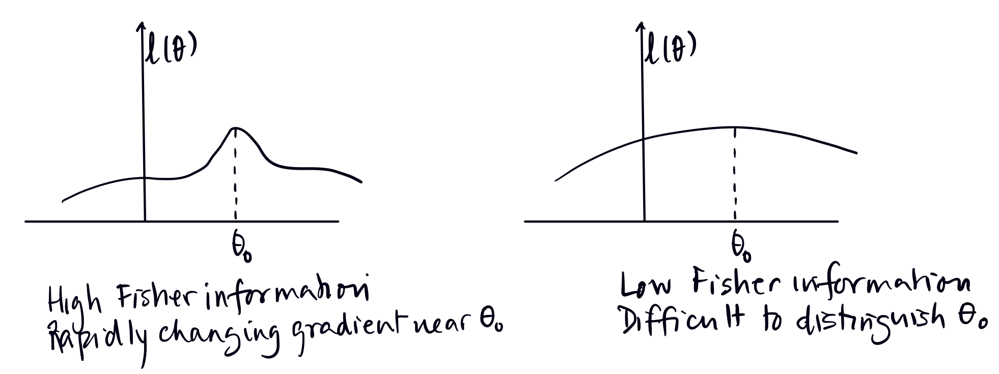

The Asymptotic Distribution of the MLE
Large Sample Theory for the Maximum Likelihood Estimator
When we began studying the MLE, we mentioned how it is often preferred to the method of moments estimate since it has some nice statistical properties. We discussed consistency in the previous chapter. Today we will discuss the distribution of the MLE when the sample size is large, and define two new quantities: the score function of an estimator and the Fisher Information of a sample.
Asymptotic Normality of MLE & Fisher Information
Theorem 1 Under certain smoothness conditions on the density function \(f(x|\theta)\), the maximum likelihood estimator, \(\hat{\theta}_n\) (from an IID sample from the distribution), \(X_1, \ldots, X_n\), is asymptotically Normal:
\[ \sqrt{n I(\theta_0)}\left(\hat{\theta}_n - \theta_0\right) \xrightarrow{D} N(0,1) \]
This implies that for large sample size \(n\),
\[ \hat{\theta}_n \approx N\!\left(\theta_0,\ \frac{1}{n I(\theta_0)}\right), \] and we can say that the asymptotic standard error for \(\hat\theta_n\) is given by \(\dfrac{1}{\sqrt{nI(\theta_0)}}\).
Note that this is the true value of the asymptotic SE of the MLE. If we have a data sample, and we get an estimate for \(\theta_0\), we can plug this estimate in, to get an estimated value for the asymptotic standard error.
The Fisher Information of the random variable \(X\)
We established consistency in the last chapter, so we know that \(\hat{\theta}_n\) converges in probability, and therefore in distribution, to \(\theta_0\). \(I(\theta)\) evaluated at \(\theta = \theta_0\) is called the Fisher information of the random variable \(X\) which has density \(f(x\mid \theta_0)\), and correspondingly, \(nI(\theta_0)\) is called the Fisher Information of the IID sample \(X_1, \ldots, X_n\).
Before we get to the proof of the theorem above, we need to define another quantity called the score function, and derive a useful identity.
First, let \(\ell(\theta; X) = \log f(X|\theta)\). Now let’s define a function \(I(\theta)\), where: \[ I(\theta) = E_\theta\left[\left(\frac{\partial}{\partial\theta}\log f(x\mid \theta\right)^2\right] = E_\theta\left[\left(\ell'(\theta) \right)^2\right] \]
Let \(\theta_0\) be the true value of the parameter \(\theta\), and suppose \(X\sim f(x\mid \theta_0)\). Then the Fisher Information of the random variable \(X\) with density \(f(x|\theta_0)\), is given by \(I(\theta_0)\).
\[ I(\theta_0) = E_{\theta_0}\!\left[\left(\frac{\partial}{\partial\theta} \log f(X|\theta)\Bigg|_{\theta = \theta_0}\right)^2\right]. \]
The function \(\ell'(\theta) = \frac{\partial}{\partial\theta} \log f(x|\theta)\) is called the score function. The score function for a random sample \(X_1, \ldots, X_n\) is the derivative of the log likelihood function given the sample: \[ \frac{\partial \ell(\theta)}{\partial\theta} = \frac{\partial}{\partial\theta} \left(\sum_{i=1}^n \log f(x_i\mid \theta)\right) = \sum_{i=1}^n \frac{\partial}{\partial\theta}\log f(x_i\mid \theta), \] which is what we use to find the MLE.
Lemma 1 The expectation of the score function is 0.
Proof. Consider \(f(x|\theta)\), a density function, which means that it integrates to 1:\(\int f(x|\theta)\, dx = 1\). \[ \Rightarrow \frac{\partial}{\partial\theta} \int f(x|\theta)\, dx =\frac{\partial}{\partial\theta}(1) = 0 \] Interchanging the order of differentiation and integration, we get: \[ \int \frac{\partial}{\partial\theta} f(x|\theta)\, dx = 0 \]
Multiply and divide by \(f(x|\theta)\) to get: \[ \int \frac{\frac{\partial}{\partial\theta} f(x|\theta)}{f(x|\theta)} \cdot f(x|\theta)\, dx = 0. \] But \(\displaystyle \frac{\frac{\partial}{\partial\theta} f(x|\theta)}{f(x|\theta)} = \frac{\partial}{\partial\theta} \log f(x|\theta)\), which means that \[ \int \left(\frac{\partial}{\partial\theta} \log f(x|\theta)\right) \cdot f(x|\theta)\, dx = E_\theta \left[\frac{\partial}{\partial\theta} \log f(X|\theta)\right] = 0. \] This completes the proof.\(\blacksquare\)
Thus we have shown that the expectation of the score function is 0. Note that this implies that \(I(\theta)\) is the variance of the score function.
Lemma 2 \(I(\theta) = \displaystyle E_\theta \left[\left(\frac{\partial}{\partial\theta} \log f(X|\theta)\right)^2\right] = - E_\theta \left[\dfrac{\partial^2\log f(x\mid \theta)}{\partial \theta^2}\right].\)
Since \(\displaystyle E_\theta\left[\frac{\partial}{\partial\theta}\log f(X|\theta)\right] = 0\), that is: \[ \int \frac{\partial}{\partial\theta} \log f(x|\theta) \cdot f(x|\theta)\, dx = 0 \]
We can differentiate with respect to \(\theta\) again, and then, moving the derivative inside the integral, we get: \[ \frac{\partial}{\partial\theta}\left[\int \frac{\partial}{\partial\theta} \log f(x|\theta) \cdot f(x|\theta)\, dx\right] = 0 \]
\[ \Rightarrow \int \frac{\partial^2}{\partial\theta^2} \log f(x|\theta) \cdot f(x|\theta)\, dx + \int \frac{\partial}{\partial\theta} \log f(x|\theta) \cdot \frac{\partial}{\partial\theta} f(x|\theta)\, dx = 0 \] Now we are going to do a trick which we will use many times - we multiply and divide by \(f(x|\theta)\) and note that \(\displaystyle \frac{\frac{\partial}{\partial\theta} f(x|\theta)}{f(x|\theta)} = \frac{\partial}{\partial\theta} \log f(x|\theta)\).
Therefore, we get that: \[ \int \frac{\partial^2}{\partial\theta^2} \log f(x|\theta) \cdot f(x|\theta)\, dx + \int \left[\frac{\partial}{\partial\theta} \log f(x|\theta)\right]^2 f(x|\theta)\, dx=0 \]
Both these terms are expectations w.r.t to the density \(f(x\mid \theta)\), which means that: \[ E_\theta\!\left[\frac{\partial^2}{\partial\theta^2} \log f(X|\theta)\right] + E_\theta\!\left[\left(\frac{\partial}{\partial\theta} \log f(X|\theta)\right)^2\right] = 0 \] Which gives us: \[ E_\theta\!\left[\left(\frac{\partial}{\partial\theta}\log f(X|\theta)\right)^2\right] = I(\theta) = -E_\theta\!\left[\frac{\partial^2}{\partial\theta^2}\log f(X|\theta)\right] \] \(\blacksquare\)
This is often how we compute the Fisher Information, which is \(I(\theta)\) evaluated at \(\theta_0\), the true value of the parameter \(\theta\).
Intuition behind the Fisher Information
If we define the score function as \(\dfrac{\partial \ell (\theta)}{\partial\theta}\), where \(\ell(\theta) = \log f(X\mid \theta)\), then Fisher Information for \(X\sim f(x\mid \theta_0)\) is given by:
\[ I(\theta_0) = E_{\theta_0}\!\left[\left(\frac{\partial}{\partial\theta}(\log f(X|\theta))\right)^2\Bigg|_{\theta=\theta_0}\right] \] That is, \[ I(\theta_0) = \int \left[\frac{\partial}{\partial\theta} \log f(x|\theta)\right]^2 f(x|\theta_0)\, dx \]
Again, note that \[ \dfrac{\partial \log f(x|\theta_0)}{\partial\theta} = \dfrac{\dfrac{\partial f(x|\theta_0)}{\partial\theta} }{f(x|\theta_0)} \]
This can be thought of as how quickly \(f(x|\theta_0)\) changes near \(\theta_0\) as we change \(\theta\) near \(\theta_0\).
Remember, we compute the MLE, \(\hat{\theta}_n\), by maximizing \(\ell(\theta)\), given an IID sample \(X_1, \ldots, X_n\).
\(I(\theta_0)\) will be large if the gradient of \(\ell(\theta)\) is large. It measures how “peaked” \(\ell(\theta)\) is near \(\theta_0\).

If the density is changing rapidly near \(\theta_0\), then \(I(\theta_0)\) will be large, and we will be able to distinguish distributions with \(\theta = \theta_0\) from \(\theta \neq \theta_0\).
If \(I(\theta_0)\) is small, then we won’t be able to distinguish \(\theta_0\) so easily from other \(\theta\) values near it. So the Fisher information tells us how much information the observable random variable \(X\) contains about \(\theta_0\).
The second derivative tells us about rate of change of the gradient. If \(\ell\) is very steep then as we move away from the maximum, the gradient changes very rapidly and \(E[\ell''(\theta_0)]\) has a large, easy to find peak, and the asymptotic variance, given by \(\dfrac{1}{I(\theta_0)}\) will be small.
If the curve is shallow this means that gradient not changing very much as you move away from \(\theta_0\), so hard to discern where the maximum is.
What about if the score function is 0? In this case we have no information.
Fisher information of an IID sample
Let \(X_1, X_2, \ldots X_n\) be an IID sample with \(X_i\sim f(x\mid \theta_0)\). Let \(I_n(\theta_0)\) denote the Fisher information of the sample \(X_1, X_2, \ldots X_n\).
The Fisher information is the variance of the score function. The score function of the sample is given by the derivative of \(\ell(\theta) = \displaystyle \sum_{i=1}^n\log f(X_i\mid \theta)\): \[ \begin{align*} I_n(\theta) &= \mathrm{Var}(\ell'(\theta))\\ &= \mathrm{Var}\left(\sum_{i=1}^n \dfrac{\partial \log f(X_i\mid \theta)}{\partial\theta}\right)\\ &= \sum_{i=1}^n \mathrm{Var}\left(\dfrac{\partial \log f(X_i\mid \theta)}{\partial\theta}\right)\\ &= nI(\theta). \end{align*} \] Since the variance of the sum of independent random variables is the sum of their variances, the Fisher information of an IID random sample of size \(n\) is \(n\) times the Fisher information of a single observable random variable.
Example Let \(X_1, \ldots, X_n \overset{IID}{\sim} \text{Bernoulli}(p)\), so \(\theta = p\). The pmf of \(X_i\) is given by: \[ f(x_i) = p^{x_i}(1-p)^{1-x_i}. \]
The likelihood function is \[ \mathrm{lik}(p) = f(X_1,\dots,X_n \mid p) = \prod_{i=1}^n f(X_i \mid p). \] Define \(Y = \sum_{i=1}^n X_i\), then we can write Then \(\mathrm{lik}(p)=p^{Y}(1-p)^{n-Y}\) and we can define the log likelihood function \(\ell(p)\): \[ \ell(p) = \log\text{lik}(p) = Y\log p + (n-Y)\log(1-p). \] Computing \(\ell'(\theta)\), we get: \[ \ell'(p) = \frac{Y}{p} - \frac{n-Y}{1-p}, \qquad (p\neq0,1). \] We set \(\ell'(p) = 0\) and solve for the MLE: \[ \ell'(p)=0 \Rightarrow (1-p)Y = p(n-Y) \Rightarrow \hat p = \frac{Y}{n} = \overline{X} \] Taking the second derivative, we get: \[ \ell''(p) = -\frac{Y}{p^2} - \frac{n-Y}{(1-p)^2} \le 0, \] which shows that we indeed have a maximum at \(\hat p\).
Now we can compute the Fisher information by computing the expected value of the second derivative of \(\ell(\theta)\).
Note that for one observation, \[ \ell(p)=X\log p+(1-X)\log(1-p). \]
and therefore,
\[ \ell''(p) = -\frac{X}{p^2} - \frac{1-X}{(1-p)^2}. \]
Taking expectations, we see that the Fisher information is (we are using just \(p\) instead of \(p_0\) to make the notation neater):
\[ \begin{align*} I(p) &= -E_p\left[\ell''(p)\right]\\ &= -E_p\left[-\frac{X}{p^2} - \frac{1-X}{(1-p)^2}\right]\\ &= \frac{p}{p^2}+\frac{1-p}{(1-p)^2}\\ &=\frac{1}{p(1-p)}, \end{align*} \]
because \(E(X) = p\). This implies that for an IID sample of size \(n\),
\[ I_n(p)= nI(p) = \frac{n}{p(1-p)}. \]